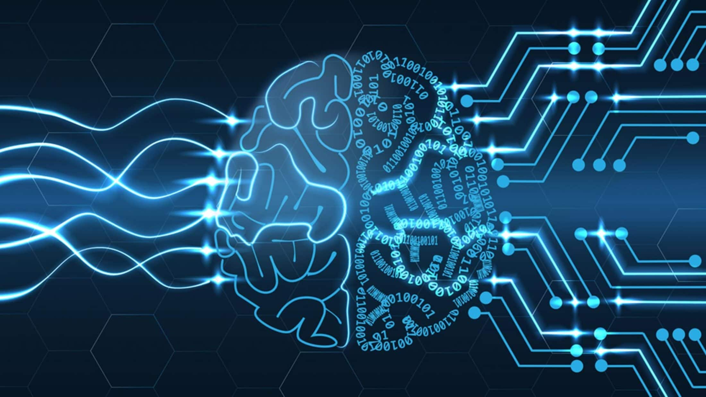
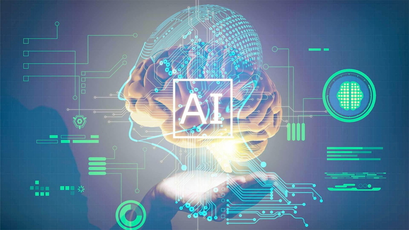

История искусственного интеллекта, как учение о развитии современной науки и технологии создания интеллектуальных машин, имеет свои корни в ранних философских исследованиях природы человека и процесса познания мира,расширенных позднее нейрофизиологами и психологами в виде ряда теорий относительно работы человеческого мозга и мышления. Современной стадией развития науки об искусственном интеллекте является развитие фундамента математической теории вычислений — теории алгоритмов — и создание компьютеров.
Наука об искусственном интеллекте
Как прикладная наука «Искусственный интеллект» имеет теоретическую и экспериментальную части. Практически, проблема создания «Искусственного интеллекта» находится на стыке информатики и вычислительной техники — с одной стороны, с нейрофизиологией, когнитивной и поведенческой психологией — с другой стороны. Теоретической основой должна служить Философия искусственного интеллекта, но только с появлением зна́чимых результатов теория приобретёт самостоятельное значение. Пока, теорию и практику «Искусственного интеллекта» следует отличать от математических, алгоритмических, робототехнических, физиологических и прочих теоретических дисциплин и экспериментальных методик, имеющих самостоятельное значение.
Философские предпосылки к возникновению науки
На саму возможность мыслить о понятии «Искусственный интеллект» огромное влияние оказало рождение механистического материализма, которое начинается с работы Рене Декарта «Рассуждение о методе» (1637) и сразу вслед за этим работы Томаса Гоббса «Человеческая природа» (1640).
Рене Декарт предположил, что животное — некий сложный механизм, тем самым сформулировав механистическую теорию.
И тут важно понимать, чем отличается именно механистический материализм, от античного материализма, взгляды которого запечатлены в работах Аристотеля, и последующей диалектики Гегеля, диалектического и исторического материализма (Фейербах, Карл Маркс, Фридрих Энгельс, В. И. Ленин). Дело в том, что механистический материализм направлен на механистическое происхождение организмов, в то время как античный материализм направлен на механистическое происхождение природы, а диалектический и исторический материализм относится к проявлениям механизма в обществе.

Поэтому понятно, что без понимания механистичности в организмах не могла идти речь о понимании искусственного интеллекта даже в самом примитивном смысле, а наличие механистичности природы и общества выходят за рамки области об искусственном интеллекте, и строго говоря не являются необходимыми предпосылками.
Технологические предпосылки к возникновению науки
В 1623 г. Вильгельм Шикард построил первую механическую цифровую вычислительную машину, за которой последовали машины Блеза Паскаля (1643) и Лейбница (1671). Лейбниц также был первым, кто описал современную двоичную систему счисления, хотя до него этой системой периодически увлекались многие великие ученые. В 1832 году коллежский советник С. Н. Корсаков выдвинул принцип разработки научных методов и устройств для усиления возможностей разума и предложил серию «интеллектуальных машин», в конструкции которых, впервые в истории информатики, применил перфорированные карты. В XIX веке Чарльз Бэббидж и Ада Лавлейс работали над программируемой механической вычислительной машиной.
Рождение науки
В 1910—1913 гг. Бертран Рассел и А. Н. Уайтхед опубликовали работу «Принципы математики», которая произвела революцию в формальной логике. В 1941 Конрад Цузе построил первый работающий программно-управляемый компьютер. Уоррен Маккалок и Уолтер Питтс в 1943 опубликовали A Logical Calculus of the Ideas Immanent in Nervous Activity, который заложил основы нейронных сетей.
Некоторая история создания и развития.
Идеи создания машин, обладающих сознанием, возникали еще в Древней Греции. В средние века и Новое время ученые создавали механизмы, заменяющие человеческий труд, например, в 17 веке Паскаль изобрел первую механическую цифровую вычислительную машину, в 19 веке Джозеф-Мари Жаккард создал программируемый ткацкий станок с инструкциями на перфокартах. В 1937 году Алан Тьрюнинг обнародовал свое изобретение – универсальную машину Тьюринга, в 1939 году в Нью-Йорке были представлены первый механический человек Electro с собакой Sparco.
Однако возможность разрабатывать программы, выполняющие сложные интеллектуальные задачи, появилась только после появления современных компьютеров после Второй мировой войны. В 1950-х годах ученые из различных областей стали задумываться о возможности создания искусственного мозга. Тогда исследования в области неврологии показали, что мозг представляет собой нейронную сеть, а А. Тьюнинг предположил, что любой вид вычислений можно представить в цифровом виде, и в 1951 году была создана первая нейронная сеть SNARC аспирантом Марвином Мински. К 1950 году А. Тьюринг разработал тест, определяющий уровень схожести действий машины с сознанием человека, впоследствии названный тестом Тьюринга. Название «искусственный интеллект» впервые было использовано на Дартмутской конференции в 1956 году, тогда же и появилась научная дисциплина «Исследование искусственного интеллекта».
Впоследствии было создано множество машин, понимающих речь человека, умеющих поддерживать беседы на заданные темы, роботов, играющих в настольные игры: знаменитый матч между компьютером и Каспаровым в шахматах закончился победой машины. Сейчас искусственный интеллект занимает важную позицию в развитии науки, особенно в рамках концепции Интернета вещей, ведь недостаточно только собирать данные, необходимо их обрабатывать, анализировать и действовать в тех случаях, когда человек этого сделать не может.